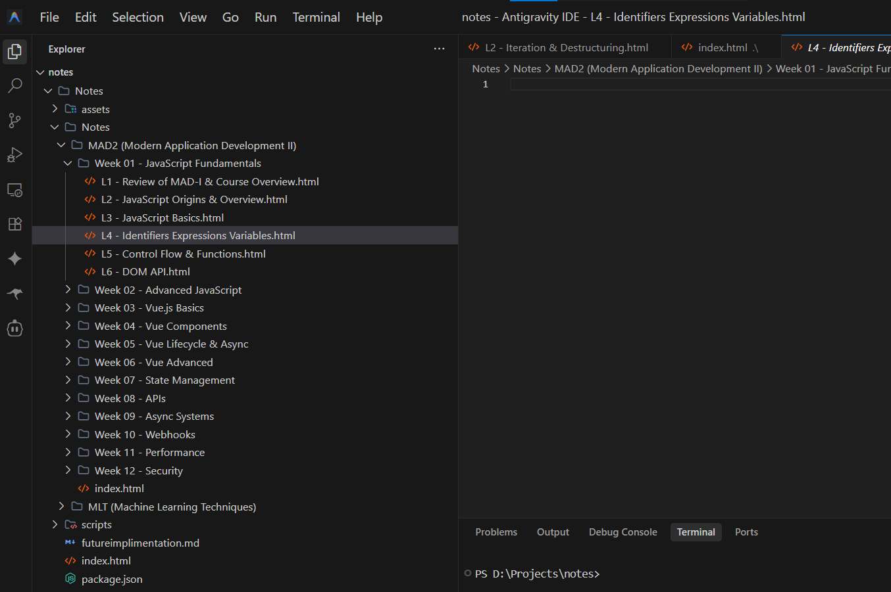

Contributor Guide
Contribution Workflow
Follow this 6-step timeline to contribute a new lecture note.
Open the lecture playlist and choose the lecture you want to convert into notes.
Navigate to the course playlist and pick the lecture that is missing or needs updating.
Go to Gemini and upload the lecture. Use this prompt:
Create lecture notes without timestampsand with lecture no on it. Include all key concepts, definitions, and examples.Follow these steps:
- Upload the lecture video or audio to Gemini IN YT.
- Paste the prompt above.
- Wait for the response to complete.
- Copy the generated lecture notes.


Open Claude and paste the copied lecture notes. Use this prompt:
I will send you lecture notes. Convert them into a beautiful HTML artifact using:
- Box-card layout
- Analogies & real-life examples
- Annotated code & visual hierarchy
- Tables & callout boxes
- Diagrams using pure HTML/CSS
- Mobile responsive design
- the best for learning this topic possible
- Use the /discovery-lecture-framework and /premium-math-typesetting skills to structure the pedagogy and typeset formulas.Claude will generate an Artifact. Copy the HTML or download it.(some time it give option to copy as img , in that case download the file then you will get .html file)

To get the best results, create a Claude Project for your contributions and add the following two custom skills. You can copy the code blocks below and paste them into your project's custom instructions or create them as files in your Claude project knowledge:
1. Discovery-Based Lecture Framework
Add this skill as a custom instruction or file named discovery-lecture-framework:
---
name: discovery-lecture-framework
description: >
Use this skill whenever converting lecture notes, textbook material, or a topic into study notes, an HTML artifact, or an explanation — especially for math-heavy or ML/statistics/engineering topics. Trigger any time the user shares raw lecture content and asks for it to be turned into notes, or asks to "explain X properly", "teach me X", or build a "complete"/"deep" understanding of a formula or algorithm, even without naming the framework explicitly. This defines the 17-stage content structure (Problem → History → Engineering → ... → Connections) that every topic should be walked through so nothing is memorized and everything is derived. Pairs with the premium-math-typesetting skill for visual presentation once the content is structured this way.
---
# Discovery-Based Lecture Framework
A 17-stage pedagogical structure (numbered 0–16) for teaching any formula, algorithm, or technical concept so that the learner *arrives* at it rather than memorizes it. This is the content skeleton — use `premium-math-typesetting` for how it gets visually rendered once structured.
Not every stage needs equal depth for every topic. Short topics can compress several stages into a paragraph each; foundational topics (like a core loss function or a canonical algorithm) deserve the full treatment. Never skip a stage silently — if it's genuinely not applicable, say so briefly rather than omitting it.
## The 17 stages
**0 — Problem**
Start before the formula exists. Present a concrete, real-world scenario (a business, a person, a decision) where something needs to be measured, predicted, or decided, and no tool yet exists to do it. This is the "Zillow predicting house prices" move — ground the abstraction in a situation with stakes.
**1 — History**
Briefly situate the idea in time: who ran into this problem first, roughly when, and what constraint of that era shaped the solution (limited compute, a competing method that failed, an adjacent field's technique being borrowed). Keep this tight — a few sentences, not a biography. Skip invented or uncertain historical claims rather than fabricating specifics.
**2 — Engineering**
Show the practical, non-mathematical reasoning an engineer would use before any formula appears: what are the requirements the solution must satisfy? (e.g. "errors must not cancel," "must be computable without huge matrices"). This is where candidate approaches get compared and rejected on practical grounds.
**3 — Mathematical Translation**
Convert the engineering requirements from stage 2 into mathematical language for the first time. Each requirement should map visibly to a mathematical property (non-negativity → absolute value or square; differentiability → rules out absolute value; etc.).
**4 — Formula Construction**
Build the formula piece by piece, vertically, each line justified by the requirement that demanded it (see `premium-math-typesetting` for the step-flow visual pattern). End with the complete formula in a proper equation panel, never dropped in as a fait accompli.
**5 — Formula Anatomy**
Take the finished formula apart symbol by symbol. Every variable, parameter, operator, and constant gets a plain-language role — not just a name, but *why it's there* and what real-world quantity it represents.
**6 — Derivation**
Show what happens when you manipulate the formula further — usually differentiation, but can be simplification, decomposition, or a proof of a key property. Explain *why* this manipulation is being done (what question it answers) before doing it.
**7 — Algorithm**
Turn the math into a procedure: the ordered steps a machine or person would actually execute. Pseudocode or annotated code belongs here.
**8 — Optimization**
Address what breaks at scale or in practice, and the engineering response to it (e.g. closed-form → too expensive → gradient descent → still slow → mini-batch/SGD). This is usually its own mini-evolution chain.
**9 — Edge Cases**
Where does this formula or algorithm behave unexpectedly, fail, or need a guard? (division by zero, non-convexity, outliers, degenerate inputs, ill-conditioned matrices, etc.)
**10 — Pattern Recognition**
Teach the learner to recognize *when* a real-world problem calls for this tool — the signals in a problem statement or dataset that should make this formula come to mind.
**11 — Formula Shape Recognition**
Teach the learner to recognize this formula's *shape* even when notation differs — e.g. spotting a Σ(prediction − actual)² pattern under different variable names across different papers, courses, or codebases.
**12 — Problem Families**
Zoom out: what broader family of problems does this belong to, and what sibling techniques exist in that family? (e.g. MSE as one member of the loss-function family alongside MAE, Huber loss, cross-entropy.)
**13 — Expert Thinking**
Describe the mental shortcuts, intuitions, or rules of thumb a practitioner uses instead of re-deriving from scratch every time — how someone fluent in the topic actually thinks about it day to day.
**14 — Exam Shortcuts**
Practical tricks for solving problems under exam or interview time pressure: shortcut identities, common trap questions, what graders look for, fast sanity checks.
**15 — Industry Implementation**
How this actually appears in production systems or real tools — library function names, common implementation details, what changes between textbook version and production version.
**16 — Connections**
Close by linking this topic to what comes next or what it connects to elsewhere in the curriculum — the thread that ties this lecture to the next one, or to a parallel topic the learner already knows.
## Using this with lecture note conversions
When the user sends raw lecture notes (often written as a similar discovery-narrative already, arrows and all) and asks for an HTML artifact:
1. Map the source content onto the 17 stages — most raw notes will already cover stages 0–8 in some form; stages 9–16 often need to be added/expanded since source notes tend to stop at the algorithm.
2. Preserve any framework or evolution-chain content the source material already has (roadmaps, formula evolution maps) — these usually map onto stage 12 (Problem Families) or stand as their own closing section.
3. Build the visual artifact per `premium-math-typesetting` conventions and the existing MLT notes design system (dark navy background, gold/teal/purple accents, Fraunces/Inter/JetBrains Mono).
4. If the source material is thin on later stages (9–16), it's fine to build them out with standard, well-established knowledge for that topic — flag additions as extensions beyond the source notes if the distinction matters to the user.2. Premium Math Typesetting
Add this skill as a custom instruction or file named premium-math-typesetting:
---
name: premium-math-typesetting
description: >
Use this skill whenever creating or editing HTML/web study notes, lecture notes, or educational artifacts that contain mathematical equations, derivations, or formulas — especially machine learning, statistics, linear algebra, or textbook-style content. Trigger this any time math needs to be displayed in an HTML artifact, even if the user just says "make notes on X" or "explain this derivation" without explicitly asking for "premium" or "textbook-style" formatting. Also trigger when the user asks to make math "look better", "more visual", "like a textbook", or references MIT OpenCourseWare, Stanford CS notes, or Apple Books style. Covers equation panels, step-by-step derivation timelines, color-coded symbols, matrix rendering, symbol legends, and SVG concept illustrations for HTML artifacts.
---
# Premium Math Typesetting
Turns raw equations into textbook-quality visual presentation inside self-contained HTML artifacts (the kind built for interactive study notes). The goal: a student should understand an equation visually before reading its explanation. This mirrors the visual bar of MIT OpenCourseWare, Stanford CS229/CS231n notes, DeepMind's research explainers, and Apple Books textbooks.
Core principle: **math is never inline text or monospace code.** Every non-trivial equation gets its own dedicated, styled Equation Panel.
## 1. The Equation Panel
Every major equation lives in its own card — never inline in a paragraph.
Required elements of a panel:
- Section label above it (e.g. "Maximum Likelihood")
- Large, centered equation, generous whitespace
- Soft elevated card: subtle shadow/border, rounded corners, background distinct from page
- An accent border or glow tied to the equation's theme color
- Equation number in the corner (e.g. "Eq. 3.2") for later reference
Minimal CSS pattern to reuse:
```css
.eq-panel {
background: var(--panel-bg, #12141c);
border: 1px solid var(--panel-border, rgba(255,255,255,0.08));
border-radius: 16px;
padding: 2.5rem 2rem;
margin: 2rem 0;
box-shadow: 0 8px 30px rgba(0,0,0,0.25);
text-align: center;
position: relative;
}
.eq-panel .eq-number {
position: absolute; bottom: 0.75rem; right: 1.25rem;
font-size: 0.8rem; opacity: 0.5; font-family: var(--mono-font);
}
.eq-main {
font-family: var(--serif-math-font, "Fraunces", "STIX Two Math", serif);
font-size: clamp(1.3rem, 2.5vw, 2.2rem);
}
```
## 2. Break equations into readable lines — never compress
Don't render `logL(θ)=Σlog(Σ...)` as one dense line. Split it across vertically stacked lines inside the panel, one logical unit per line (summation on its own line, the term it sums over below/beside it, etc.), with visible spacing around every operator (`=`, `Σ`, `∏`, `+`).
## 3. Derivations are vertical, not `A=B=C=D`
For any multi-step derivation, show each transformation as its own step, connected top-to-bottom by an arrow (↓), not chained left-to-right with equals signs. Two supported layouts:
- **Inline vertical chain** inside one panel (short derivations, 3–5 steps)
- **Step Timeline** — separate numbered cards, one per step (longer derivations). Each step card gets: step number, short title (e.g. "Take Log", "Differentiate", "Set = 0"), and the resulting expression.
## 4. Color-code symbols consistently
Assign a fixed color role and reuse it everywhere in the document — the same symbol is always the same color:
| Role | Color | Applies to |
|---|---|---|
| Variables | Blue | x, y, data points |
| Parameters | Gold | θ, w, μ, learned/fitted values |
| Constants | Green | fixed numbers, hyperparameters |
| Functions | Purple | f(), L(), N(), log |
| Important operators | Red | Σ, ∇, ∂, key operators worth flagging |
Define these once as CSS variables/classes (`.sym-var`, `.sym-param`, `.sym-const`, `.sym-fn`, `.sym-op`) and apply consistently across every equation panel and every legend in the document.
## 5. Symbol legend under every equation with new notation
Whenever an equation introduces symbols not yet defined on the page, add a compact legend directly below the panel: symbol (colored per §4) → one-line plain-English meaning. Keep entries terse — this is a lookup, not a paragraph.
## 6. Oversized treatment for "heavy" operators
Any equation containing Σ, Π, ∫, ∂, ∇, a matrix, a vector, or a covariance term gets larger-than-body-text rendering for that operator specifically (visually the largest element in the panel) so it reads as the visual anchor of the equation.
## 7. Matrices as real grids, never inline brackets
Never write `[[2,1],[4,7]]` or `[2 1; 4 7]` in running text. Render as an actual grid — an HTML `<table>` or CSS grid with bracket styling on the sides — so rows/columns are visually distinct.
## 8. Step Timeline component (for long derivations)
Use for derivations with 4+ meaningful steps. Each step: number badge, short imperative title, the math for that step, connected by a vertical line/arrow to the next. This is the same visual language as the "signature interactive simulator" pattern already used in the MLT notes — consistent with that design system.
## 9. Below every equation, include (as collapsible or clearly separated sub-sections)
- Plain-English explanation of what the equation says
- Visual intuition (a metaphor, a mental picture)
- A worked numerical example with real numbers plugged in
- Practical interpretation — why this matters / when you'd use it
- Common mistakes students make with this equation
Don't skip these for "obvious" equations — the visual panel earns its keep because of what surrounds it.
## 10. Typography rules
- Never monospace for math. Use a math-appropriate serif (Fraunces, STIX Two Math, Computer Modern–like fonts) for the equation itself; monospace is reserved for actual code.
- Variables italic, function names upright (`f(x)`, `log`, `max` are upright even though `x` is italic).
- Subscripts/superscripts properly aligned (use `<sub>`/`<sup>` or CSS `vertical-align`, sized down consistently, never just smaller inline text that drifts off the baseline).
## 11. Responsive behavior
Equation panels must scale, not overflow or shrink to unreadable size:
- Use `clamp()` for font sizes tied to viewport width
- Long equations wrap onto multiple lines rather than horizontally scrolling
- On narrow viewports, stack side-by-side terms vertically rather than shrinking them below ~1rem
## 12. SVG concept illustration per major formula
For each formula central to a lecture/topic, build a small SVG diagram that visualizes the *process* the equation represents (not the algebra itself) — a flow of boxes/arrows showing the conceptual pipeline. Examples of the pattern:
- **GMM**: Component 1 → weighted → (+) → Component 2 → weighted → (+) → ... → Final probability
- **MLE**: Observed Data → Likelihood → Log → Optimization → Best Parameters
- **SVM**: Points → Margins → Hyperplane → Maximum Margin
- **Linear Regression**: Features → Weighted Sum → Prediction → Loss → Gradient
Keep these simple: boxes/pills connected by arrows, using the same color-role system as §4, sized to sit comfortably beside or below the equation panel.
## Applying this to existing MLT notes work
This skill is the formatting layer for the ongoing IIT Madras MLT interactive HTML notes project — apply it to every new lecture conversion (equation-heavy sections especially: MLE, GMM/EM, PCA eigenanalysis, linear regression normal equations, bias-variance). Keep it consistent with the existing dark-navy/gold/teal/purple design system and Fraunces/Inter/JetBrains Mono typography already in use, rather than introducing a new visual language — this skill governs *how math specifically* is rendered within that existing system.
## Quick checklist before shipping a notes artifact
- [ ] Every equation is in its own panel, not inline in a paragraph
- [ ] No equation is monospace or unstyled plain text
- [ ] Long equations are broken into readable, spaced-out lines
- [ ] Multi-step derivations use vertical arrows or a step timeline, not `A=B=C`
- [ ] Symbol colors are consistent across the whole document
- [ ] A legend appears wherever new notation is introduced
- [ ] Matrices are rendered as grids
- [ ] Each major equation has an explanation, intuition, numerical example, interpretation, and common mistakes
- [ ] Each major formula has a small SVG process illustration
- [ ] Everything scales responsively without overflow or unreadable shrinkageOpen the repository in VS Code and run:
git pullAlways pull first! This avoids merge conflicts.
Navigate to the correct folder:
Paste the generated HTML. If the file exists, replace its contents.

Add extra pages like Prerequisite Topics, PYQs, Formula Sheets, Cheat Sheets, Common Mistakes, Revision Notes, Interview Questions, Assignments, Practice Problems.
Place them in the appropriate Subject/Week/ folder.
After adding new any HTML files in the Notes/ directory, you must regenerate the portal's configuration file so the sidebar navigation picks up the changes.
Run this command from the project root:
node scripts\generate-config.jsThis scans all Week */ folders for .html files and updates assets/js/config.js automatically.
Pro tip: Use the --watch flag to auto-regenerate whenever files change:
node scripts\generate-config.js --watchKeep it running in a terminal while you work — it detects new, renamed, or deleted files and updates config.js on the fly.
Git Commands
Every command you need, ready to copy:
Regenerate Portal Config
node scripts\generate-config.jsAlways run this after adding, renaming, or deleting HTML files in Notes/. It updates the sidebar navigation automatically.
Pull
git pullCheck Status
git statusAdd Files
git add .Commit
git commit -m "Added Week 2 Lecture 5 notes"Push
git pushClone Repository
git clone <repository-url>Folder Structure
Images
All screenshots should be loaded from assets/img/. Use placeholders so images can easily be replaced later.
Open Playlist
Navigate to the platform and select a lecture.
Gemini Prompt
Ask Gemini for raw notes.
Gemini Output
Copy the generated raw notes.
Claude Prompt
Paste prompt for HTML artifact.
Claude Artifact
Copy the generated HTML.
Git Push
Add, commit, push.
Best Practices
Pull Before Changes
Always run git pull first.
Keep Formatting Consistent
Follow existing HTML patterns.
Don't Rename Folders
Breaks links for others.
Check Links
Verify all internal links work.
Consistent Filenames
Use lecture-XX.html format.
Meaningful Commit Messages
Describe what you added.
Regenerate Config After Changes
Run node scripts\generate-config.js after adding or renaming files.
Common Mistakes
Forgetting git pull — Always pull first to avoid conflicts.
Wrong folder — Double-check subject and week.
Incorrect filename — Use lecture-01.html consistently.
Broken HTML — Preview in browser before committing.
Forgot to regenerate config — New files won't appear in the portal sidebar. Run node scripts\generate-config.js.
Forgetting git push — Commit is not enough; push changes.
Accidentally deleting files — Be careful when cleaning up.
Contribution Checklist
Tick each item as you complete it:
- Lecture selected
- Gemini notes generated
- Claude artifact created
- HTML copied
- Correct folder used
- Tested locally
- Config regenerated (
node scripts\generate-config.js) - Git pull completed
- Git add completed
- Commit completed
- Push completed
FAQ
Resources
Repository
Access the full notes collection on GitHub.
Gemini
Use Gemini IN YT to generate raw notes from lectures.
Claude
Convert raw notes into beautiful HTML using Claude.
VS Code
Your editor for managing the repository files.
Git Documentation
Official Git docs for advanced commands.